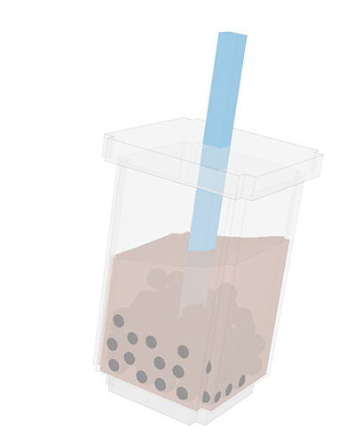

GOT ANY QUESTIONS ?
1. WHAT KIND OF TEA DO YOU USE?
We are committed in discovering the best teas in Asia. Each season, CoCo selects only the finest whole leaf tea using the most stringent selection criteria. After being harvested, these fresh, handpicked leaves undergo the traditional 12 stages of tea making procedures, from first stage of wilting to last stage of curing. Our premium tea leaves such as Ceylon, Jasmine and Mountain tea are sourced in the finest locations of Sri Lanka, Taiwan and China.2. HOW LONG WILL MY DRINK STAY FRESH?
To ensure quality and freshness, we recommend consuming your drink within two (2) hours.

3. CAN I STORE MY DRINK IN THE REFRIGERATOR OR FREEZER?
Yes. However, for drinks with pearls, we do not recommend doing so, as this will cause the pearls’ texture to change.
4. WHERE ARE YOU LOCATED?
Our store is located at Pateros City, for further details visit Contact Us.
5. WHAT ARE YOUR OPENING HOURS?
Our store is open seven(7) days a week 9:00 am to 11:00 pm only.
6. DO YOU ACCEPT SENIOR CITIZEN AND PWD DISCOUNTS?
We give Senior Citizen and PWD discounts under Republic Act Nos. 9994 (Expanded Senior Citizen Act of 2010) and 10754 (Act of Expanding the Benefits and Privileges of a Person with Disability), respectively. Kindly present your senior citizen or PWD ID before making any payments. The cardholder must be present; authorization letters and/or proxies are not allowed. Only products intended for the personal consumption of the Senior Citizen or PWD may be discounted.
7. WHAT DO I DO IF I RECEIVE A WRONG ORDER?
Kindly inform our baristas and we will gladly replace your drink. Should you have any further concerns, you may contact our messenger m.me/CafeTwentea8.
8. ARE YOU OPEN FOR FRANCHISE?
We are open for any franchising opportunities in the Philippines.
9. HOW DO I APPLY TO BE PART OF THE TEAM?
We are always looking for committed team members. Kindly send your CVs at Careers
10. DO YOU DELIVER?
Sorry, we are not able to deliver products.